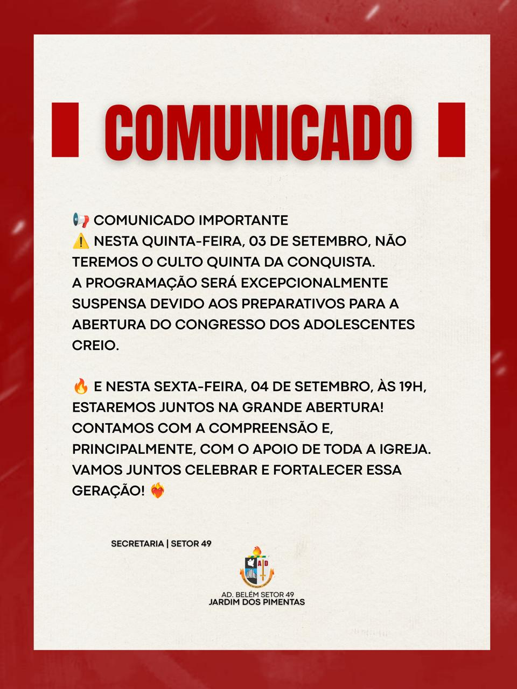

📅 Cronograma da Semana
Aviso da Semana · 31/08 a 06/09/2026Destaques da programação:
- 31/08 · 20h00: Reunião com dirigentes e esposas — Salão B, sede do Setor 49.
- 01/09 · 19h00: Culto de Ensino na sede — Cooperação: Grupo 1.
- 02/09 · 14h00: Círculo de Oração na sede.
- 03/09 · 19h00: Quinta da Conquista na sede — suspensa excepcionalmente.
- 04/09 · 19h00: 29º Congresso CREIO Pimentas — Setor 49.
- 05/09 · 19h00: 29º Congresso CREIO Pimentas — Setor 49.
- 06/09 · 17h30: 29º Congresso CREIO Pimentas — Setor 49.
⚠️ Reunião de Obreiros — 07/09
AtençãoExcepcionalmente na segunda-feira, 07 de setembro, não haverá a tradicional Reunião de Obreiros, devido à realização da 80ª EBO — Escola Bíblica de Obreiros.
O comunicado também convida a todos para o culto de abertura no domingo, 20 de setembro, às 18h.
🚨 Quinta da Conquista — 03/09
UrgenteNesta quinta-feira, 03 de setembro, não haverá o culto Quinta da Conquista. A programação foi excepcionalmente suspensa devido aos preparativos para a abertura do Congresso dos Adolescentes CREIO.
Na sexta-feira, 04 de setembro, às 19h, acontecerá a grande abertura do congresso.
